✦El poder de verse bien
El SEO clásico ya no alcanza. Cada vez más gente le pregunta a una IA “¿qué agencia me conviene?” en lugar de googlear. Te explicamos qué es el GEO y cómo empezar a aparecer en esas respuestas — el diferencial real de 2026.
Lo nuevo del sistema. Las últimas notas que sumamos — con su tapa, listas para leer.
La pregunta del año, sin humo ni catástrofe. Qué reemplaza la IA, qué se vuelve más valioso y qué hacer al respecto si vivís de crear o de tu marca.
Nos dijo que ya no nos necesitaba. Tres meses después volvió — esto es lo que pasó en el medio.
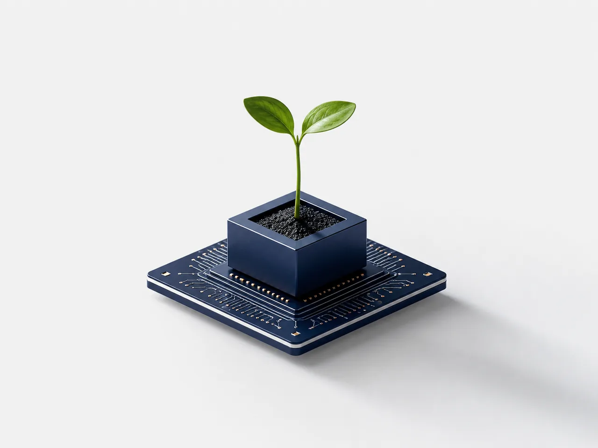
IA & GEODiez negocios que hoy se pueden montar con herramientas de IA y poco capital. Sin saber programar.
No necesitás plata para empezar. Necesitás foco. Doce movimientos para arrancar con lo mínimo y crecer con criterio.
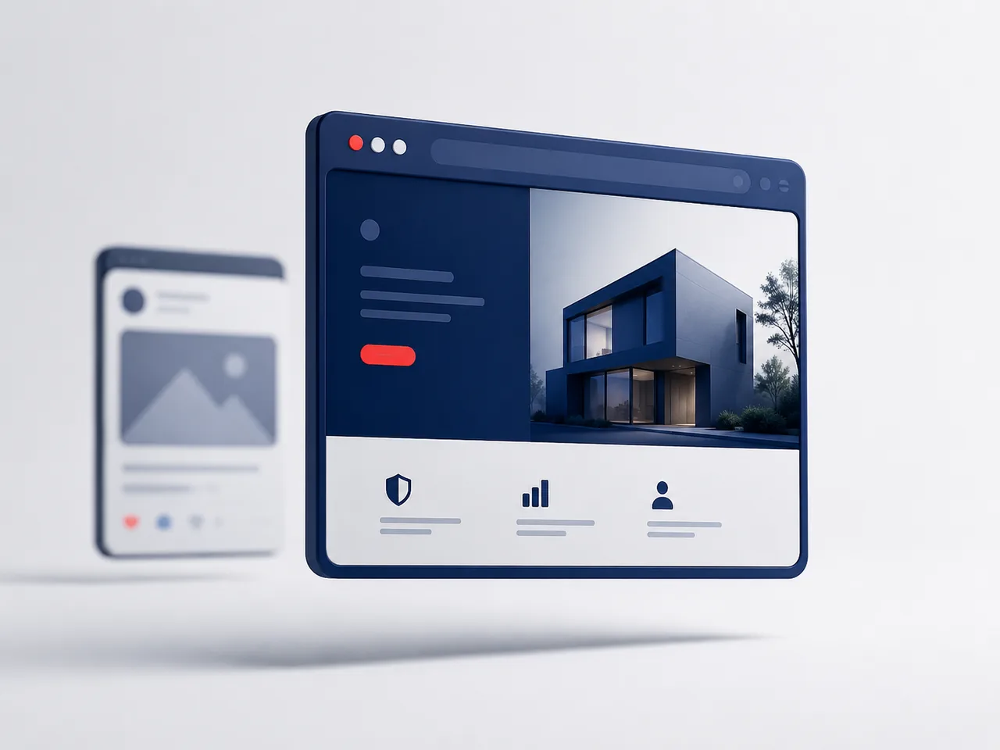
Web & SEOTener solo redes es alquilar tu audiencia en terreno ajeno. Por qué una web propia sigue siendo la base de un negocio serio.
41 guías y plantillas para aplicar hoy. Filtrá por lo que necesitás resolver.
La pregunta del año, sin humo: qué reemplaza la IA, qué se vuelve más valioso y qué hacer al respecto.
 ··8 min
··8 minNos dijo “ahora lo hago con ChatGPT”. Tres meses después volvió. Qué pasó en el medio.
··7 minDiez negocios que hoy se pueden montar con herramientas de IA y poco capital. Sin saber programar.
No necesitás plata para empezar: necesitás foco. Doce movimientos para arrancar con lo mínimo.
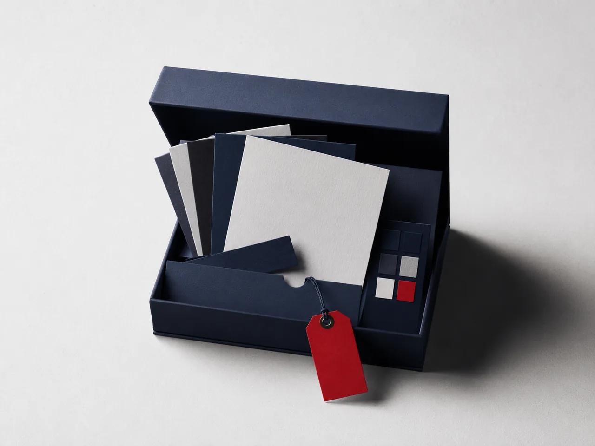
El problema casi nunca es la idea: es que no la sabés contar. La guía para que se entienda y compre.
··7 minTener solo redes es alquilar tu audiencia en terreno ajeno. Por qué la web propia sigue siendo la base.
··7 minLas automatizaciones simples que le devuelven horas (y clientes) a cualquier negocio chico.
··8 minFeed, historias, copy y calendario gestionados por un equipo. Vos atendés tu negocio; nosotros, tu contenido.
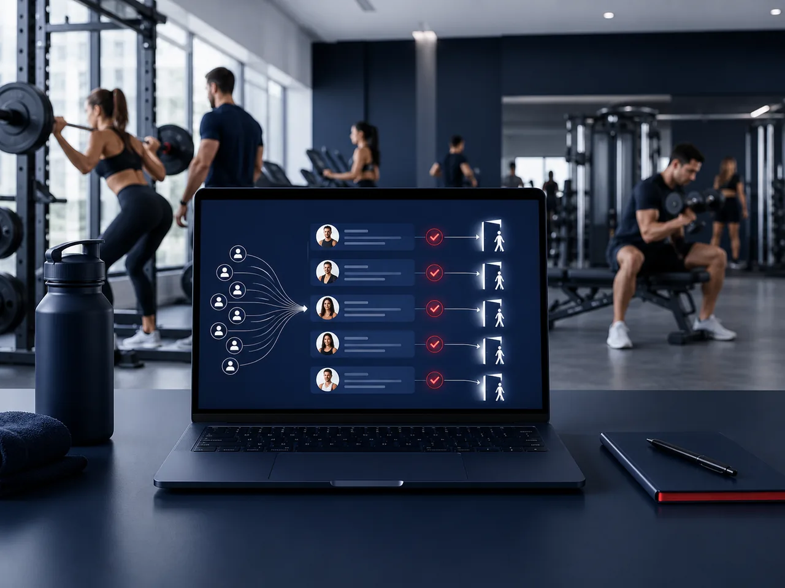
Atraer socios es la mitad; retenerlos es la otra. El sistema que llena (y mantiene llena) la sala.
··7 minUn rubro donde la confianza lo es todo. Cómo construir agenda con valor y respeto por la profesión.
··7 minSubir productos es el 10%. El sistema que conecta tráfico, conversión y recompra para vender con rentabilidad.
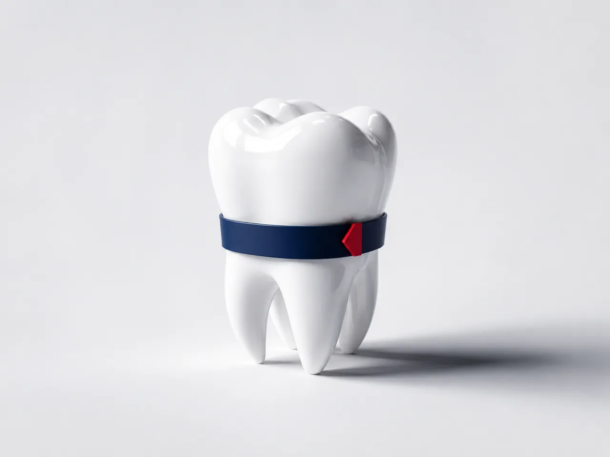
Cómo pensamos el crecimiento de un consultorio dental: contenido, web, automatización y pauta conectados.
··8 minAutoridad, una web que genera consultas y un sistema que conecta contenido, SEO y pauta.
··8 minUn sistema que conecta contenido que da hambre, reservas, delivery y pauta. No solo fotos lindas.
··7 minCómo conectar contenido, web, portales y pauta para captar propiedades y vender más.
··8 minUn sistema que conecta contenido, turnos automáticos, fidelización y pauta para llenar la agenda.
··7 min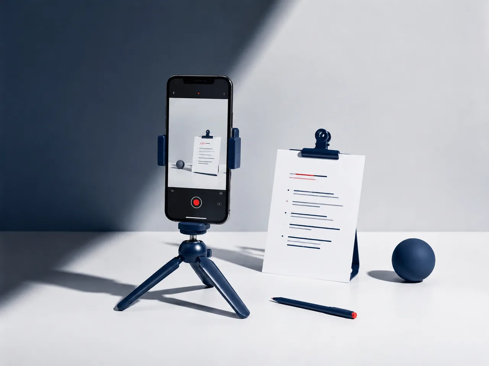
La guía paso a paso para pasar de cero a una marca presente, sin perfeccionismo ni excusas.
··9 min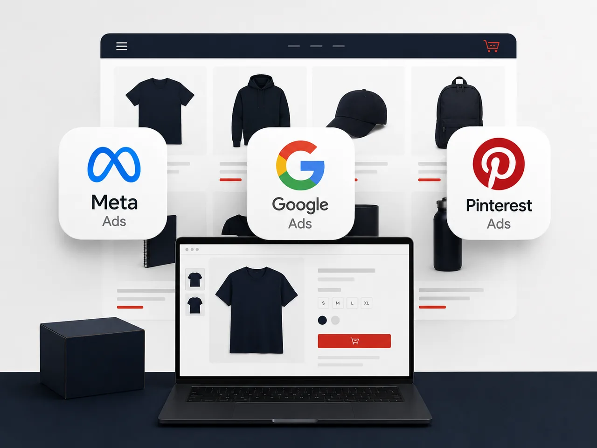
La respuesta honesta de cuánto invertir en Meta y Google para que la pauta tenga sentido.
Si tu pauta no rinde, casi siempre es por uno de estos cinco errores. Cómo evitarlos.
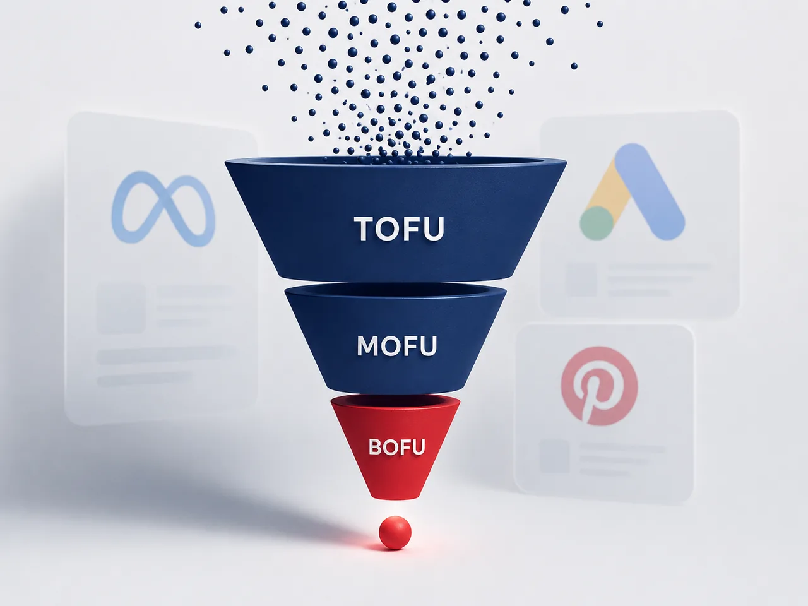
Por qué pedir “comprá ya” a quien recién te conoce no funciona, y cómo armar un embudo que vende.
Contenido + pauta + marca + web bajo una sola dirección y un solo reporte. El sistema completo, pensado para crecer.
El 80% de las consultas llegan cuando no podés responder. Cómo automatizar para captar y agendar solo.
··7 min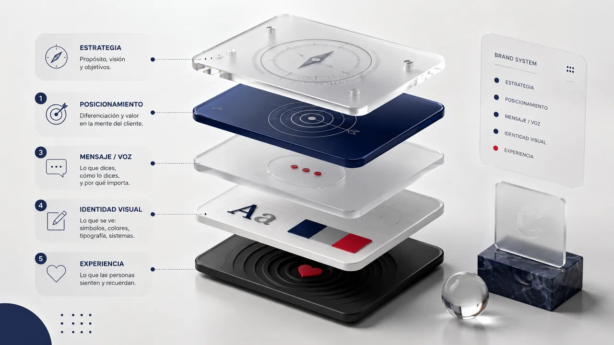
Por qué un logo lindo no alcanza, y qué construye realmente la percepción de valor de tu negocio.
··6 min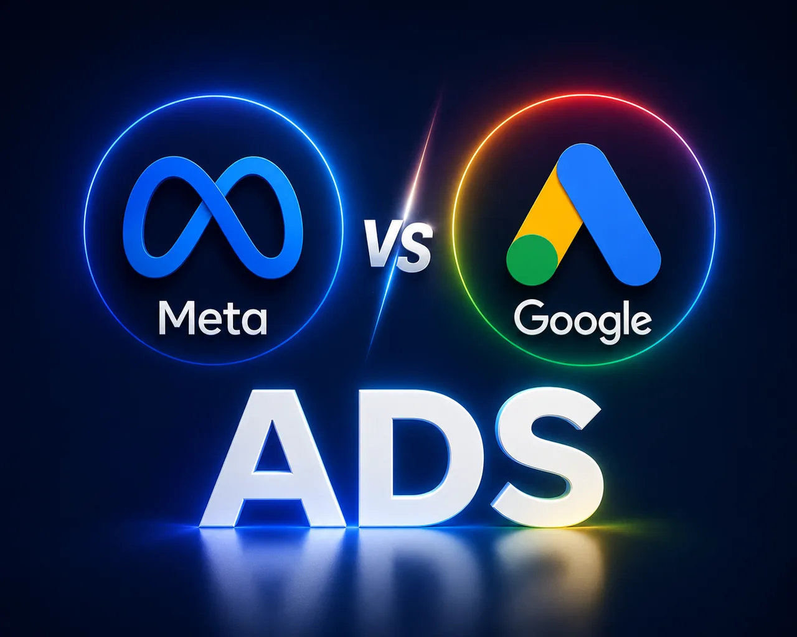
Demanda existente vs demanda a crear. Cuándo elegir cada plataforma — y cuándo combinarlas.
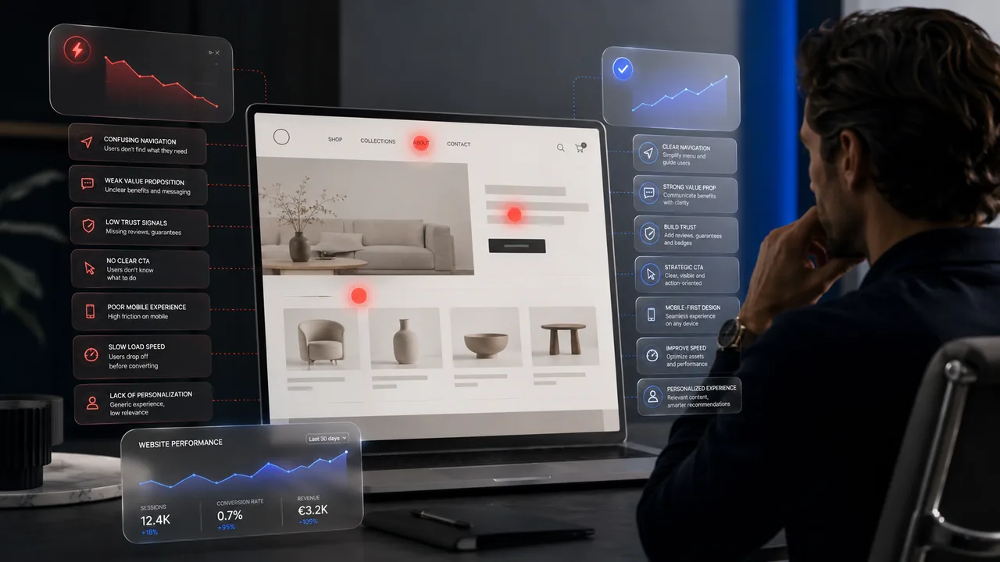
El 90% de las webs pierden al cliente en los primeros 5 segundos. La checklist para que la tuya convierta.
··8 min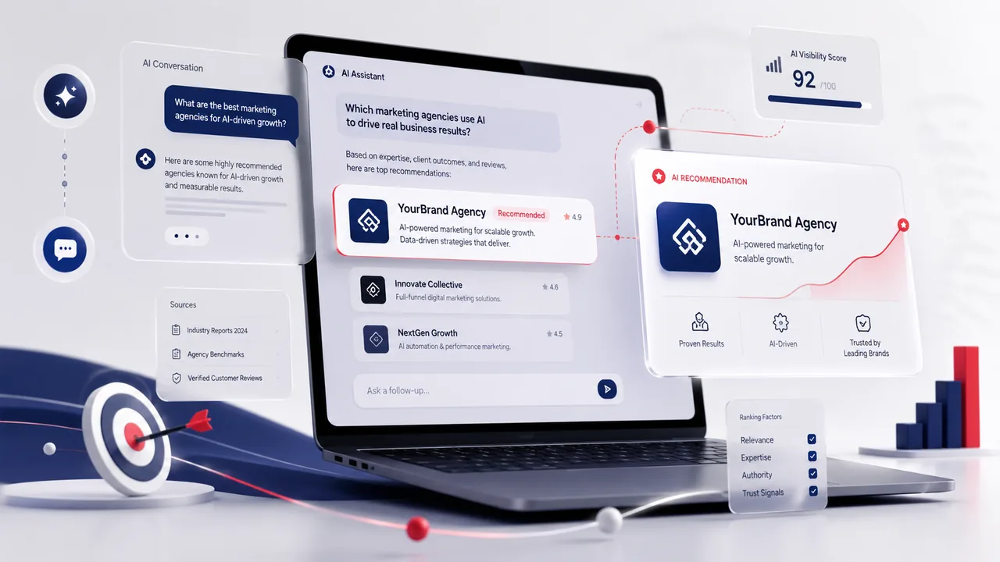
Qué es el GEO, por qué importa más que nunca y los primeros pasos concretos para aparecer en las respuestas de la IA.
··9 min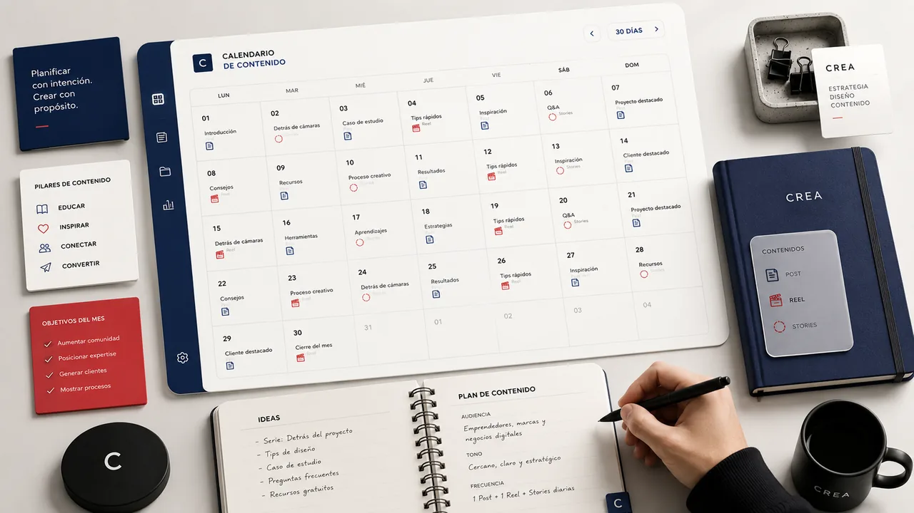
Dejá de publicar cuando te acordás. La estructura exacta que arma un mes entero de feed e historias con criterio.
··7 min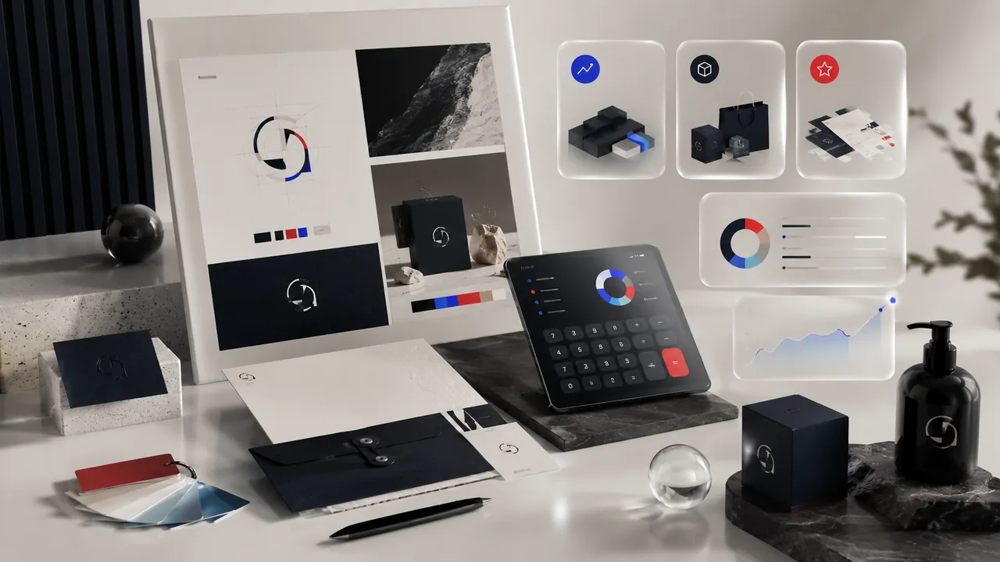
Lo que de verdad pagás cuando contratás piezas sueltas — y por qué un sistema sale más barato a la larga.
··6 min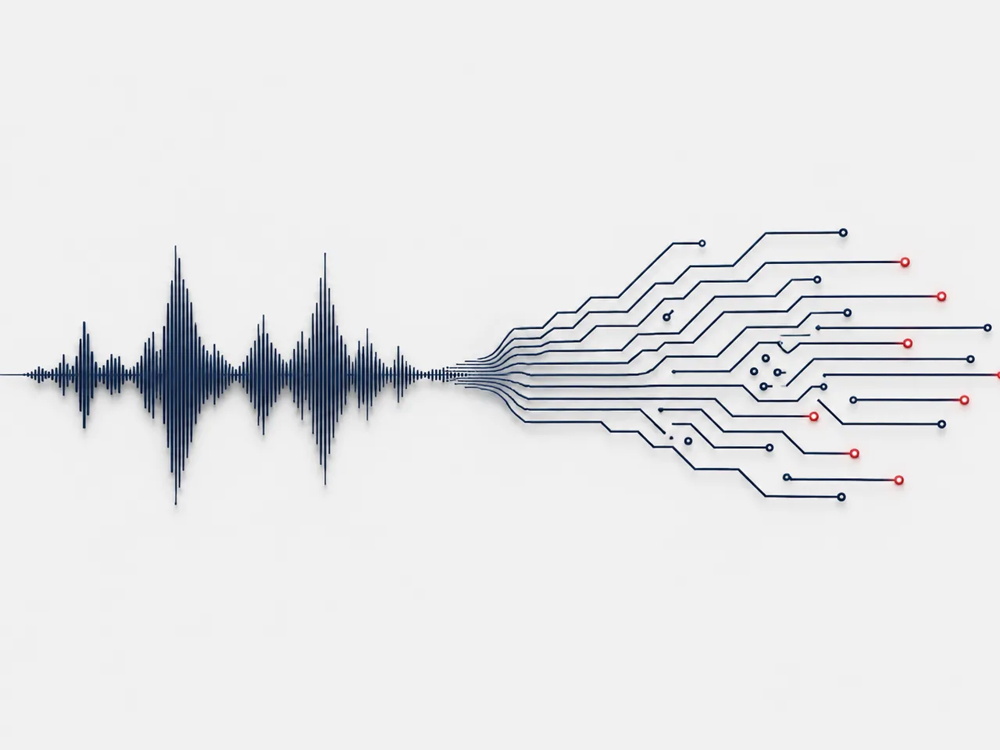
La IA te da velocidad; usada mal, todo suena igual. Cómo producir más rápido sin perder tu identidad.
··7 minMás allá de "escribime un posteo": siete formas concretas de ahorrar horas cada semana.
··7 minEl paso siguiente a ChatGPT: no solo responde, hace. Qué puede hacer dentro de tu negocio.
··8 minDejá de depender solo del boca a boca: un sistema que atrae clientes con autoridad.
··7 minTu trabajo entra por los ojos. Cómo mostrarlo para atraer al cliente que paga el buen diseño.
··7 minUn rubro emocional y de cercanía. Cómo construir comunidad y llenar la agenda con confianza.
··7 minLa gente le compra a personas. Cómo generar autoridad y confianza sin volverte influencer.
··8 minLos datos informan, las historias venden. La estructura para que conecten y te elijan.
··7 min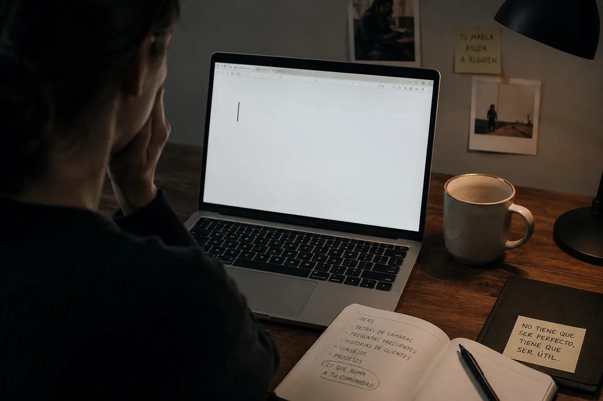
"Mi negocio es aburrido." Diez ángulos que cualquier negocio tiene para no quedarse sin contenido.
··6 min30 minutos para revisar tu marca y salir con un plan claro. Sin compromiso.
Likes y seguidores no pagan las cuentas. Las métricas que de verdad indican si funciona.
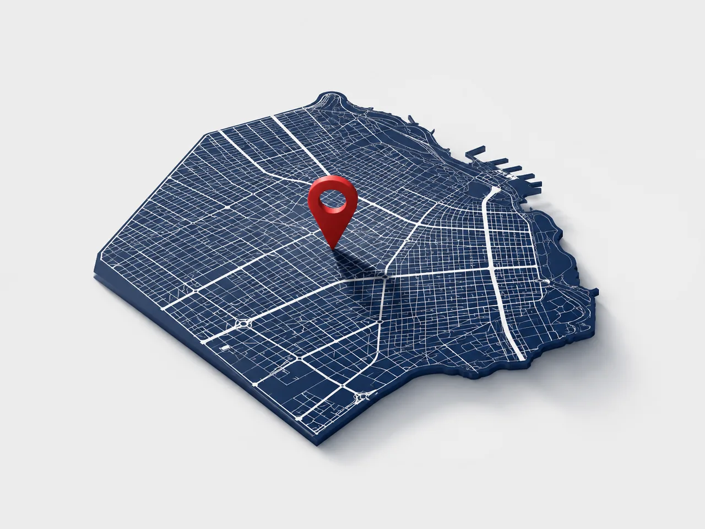
El que aparece primero en "cerca mío" se lleva el cliente. Cómo lograr que seas vos.
··7 minTu prueba social más poderosa y un factor clave del mapa. Cómo conseguir más, sin rogar.
··6 minMirar lo que cobra el resto es el error más caro. Cómo definir un precio rentable que comunique valor.
Se vende con emoción e imágenes. Cómo llenar temporadas y ganar reservas directas.
··7 minNo hay número mágico. Cómo definir el ritmo que tu negocio puede sostener y que de verdad sirve.
··6 minNo hay artículos en esta categoría todavía. Sumate al newsletter y te avisamos.
Las plantillas, checklists y calculadoras que usamos en CREA. Dejanos tu mail abajo y te las enviamos — gratis, sin vueltas.
La grilla editable que arma un mes entero de feed e historias con criterio.
Descargar gratisLa lista exacta para auditar tu web y encontrar dónde estás perdiendo clientes.
Descargar gratisCuánto invertir en Meta y Google según tu objetivo, sin tirar la plata.
Descargar gratisPara que nunca más te quedes sin saber qué publicar. Adaptables a tu marca.
Descargar gratisLa estructura de gancho, desarrollo y cierre que retiene y convierte.
Descargar gratisAudití tu branding más allá del logo y descubrí qué te falta construir.
Descargar gratisMensajes listos para no perder ninguna consulta, aunque no estés.
Descargar gratisPrompts probados para contenido, ideas y atención. Copiar, pegar y usar.
Descargar gratisUn curso corto por email para pasar de cero a publicar con criterio.
Sumarme gratis15 preguntas para saber si tu perfil está listo para convertir seguidores en clientes.
Descargar gratisLo mismo que leés acá, pero en video: estrategia, casos reales y tutoriales para aplicar. Estamos grabando los primeros episodios.
Lanzamiento pronto · dejanos tu mail abajoUna vez por semana: una idea de contenido, una tendencia y un recurso para aplicar. Cero relleno — solo lo que mueve la aguja de tu marca.
Lo bueno llega cada semana. Mientras tanto, ¿hablamos de tu marca?
Hablar por WhatsApp →Estos recursos te muestran el cómo. Si preferís que un equipo lo ejecute por vos — con estrategia, dirección y un solo reporte — esto es lo que hacemos.
Feed, historias, copy y calendario gestionados por un equipo. Tu marca presente y profesional todos los días.
Ver Community Manager → 02Identidad, sistema visual y posicionamiento. Que tu marca se vea como lo que realmente vale.
Ver Branding → 03Contenido + pauta + marca + web, bajo una sola dirección. Dejá de coordinar tres proveedores: somos uno.
Ver Combos →